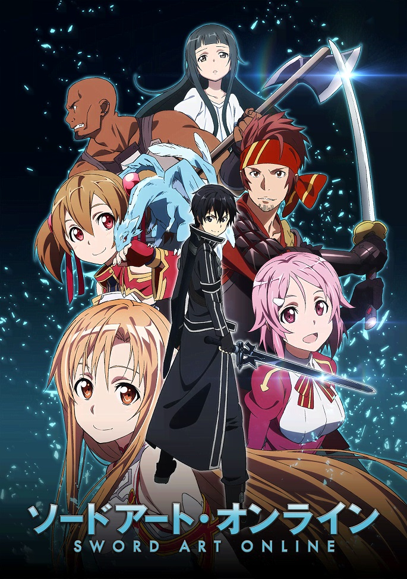

Популярное Сегодня

Атака Титанов
Сёнен, Экшен, Драма, Триллер
Серии: 25/25
Рейтинг: 8.55/10
Мир человечества разрушен вторжением гигантских титанов. Остатки людей скрываются за огромными стенами, защищаясь от смертельной угрозы. Главный герой, Эрен Йегер, стремится отомстить за потерю близких. Вместе с друзьями он присоединяется к разведкорпусу, чтобы сражаться с титанами. Постепенно раскрываются тайны происхождения титанов и история мира. Это эпическое аниме сочетает драму, экшен и шокирующие повороты сюжета.

Стальной алхимик: Братство
Сёнен, Экшен, Приключения, Драма, Фэнтези
Серии: 64/64
Рейтинг: 8.99/10
Братья Элрики совершают алхимический эксперимент, изменивший их жизни. Потеряв части тела и близкого человека, они отправляются на поиски Философского Камня. Их путешествие наполнено опасностями, врагами и глубокими открытиями. Алхимия раскрывает не только науку, но и истинную цену человеческой души. Персонажи сталкиваются с моральными дилеммами и сложным выбором. Это история о семье, жертвах и поиске истины.

Ванпанчмен
Сэйнэн, Экшен, Комедия
Серии: 12/12
Рейтинг: 8.72/10
Сайтама — герой, способный победить любого врага одним ударом. Однако его сила приносит скуку и чувство одиночества. Мир наполнен монстрами, злодеями и другими героями. Сайтама участвует в невероятных битвах, оставаясь равнодушным к славе. Его путешествие полное юмора, абсурда и эпичных боёв. Ванпанчмен — это пародия на классические супергеройские истории.

Мастера Меча Онлайн
Сёнен, Экшен, Комедия, Сверхъестественное
Серии: 25/25
Рейтинг: 8.71/10
Игроки попадают в ловушку смертельно опасной VR-игры. Чтобы выжить, им нужно пройти все уровни. Главный герой, Кирито, становится ключевой фигурой в этой битве. Он не только сражается с врагами, но и заводит друзей. Мир виртуальной реальности скрывает множество тайн и опасностей. САО сочетает в себе экшен, романтику и глубокую драму.